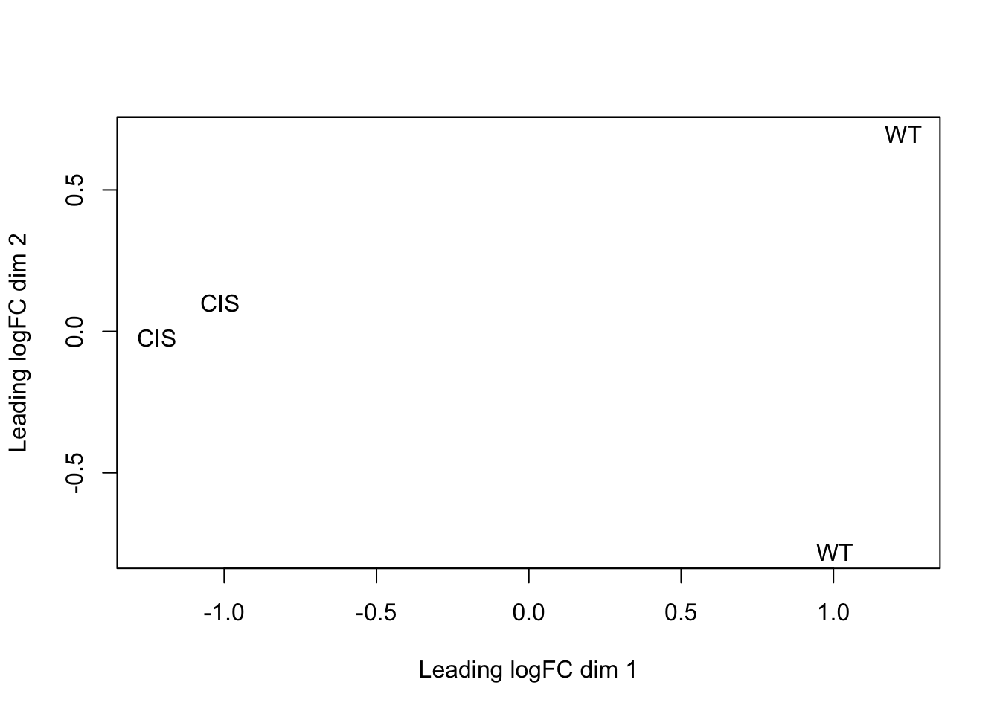

4 RNA-SEQ analysis protocol
Please note that your analysis results might be slightly different from those shown in this protocol due to software version differences.
We first change the working directory to the Workshop folder
Build index for a reference genome
Step 1
Start an R session and build an index for the reference genome GRCm38/mm10. The created index files will be saved to the current working directory. This index only needs to be built once and it can be reused in future RNA-seq data analyses. TIMING ~40 mins
If you build an index on a laptop, it is recommended to build a split index. The amount of requested memory should be roughly half of the total memory available on your laptop. For example, if your laptop has 8GB memory, you may use the following command to build a split index with 4GB memory usage. TIMING ~90 mins
Create sample-related information and evaluate quality of sequencing TIMING ~ 3 mins
Step 2
Create a tab-delimited text file that contains sample-related information such as FASTQ file names, sample names and cell types. For convenience, a file called “Targets.txt” has already been created for this dataset and we read in this file:
## Library Sample CellType
## 1 CIS_1_C6AG6ANXX_ATCACG_L008_R1.fastq.gz CIS_rep1 CIS
## 2 CIS_2_C6AG6ANXX_CGATGT_L008_R1.fastq.gz CIS_rep2 CIS
## 3 WT_3_C6AG6ANXX_TTAGGC_L008_R1.fastq.gz WT_rep1 WT
## 4 WT_4_C6AG6ANXX_TGACCA_L008_R1.fastq.gz WT_rep2 WTStep 3
Choose one of the libraries and examine the Phred quality scores of read bases at each read position. Boxplots of Phred scores are generated for each base position.
qs <- qualityScores(targets$Library[1], offset = 33)
boxplot(qs,
xlab = "Base position",
ylab = "Phred score",
cex = 0.1)Align and count reads TIMING ~6 min per library
Step 4
Map sequence reads to mouse genome GRCm38/mm10. It is recommended to provide gene annotation to the read mapping. Mapped reads are saved to BAM files and a mapping summary is returned to R after read mapping is completed.
align.outfiles <- paste(targets$Sample, "bam", sep = ".")
align.summary <-
align(
"mm10_reference",
targets$Library,
output_file = align.outfiles,
nthreads = 10,
useAnnotation = TRUE,
annot.inbuilt = "mm10"
)
align.summaryStep 5
Assign reads to overlapping genes and generate an R object that contains a count table, gene annotation and counting summary. The count table contains number of reads assigned to each gene in each library. The gene annotation includes Entrez gene identifier, chromosomal coordinates of gene exons and gene length (total number of non-overlapping exonic bases each gene has). The counting summary gives the number of successfully assigned reads in each library and also numbers of reads that failed to be assigned due to filtering. The ‘Status’ column in this summary includes a ‘Assigned’ category and also multiple ‘Unassigned’ categories corresponding to different read filters used in counting.
Save R data and switch from the UNIX server to a personal computer TIMING < 1 min
(Steps 6 and 7 can be skipped if you run the protocol using ‘RStudio (2672)’ or laptop only)
Step 6 (optional)
Save all generated R objects to a file and then copy the file to your personal computer.
Step 7 (optional)
Launch R on your personal computer and load R objects from the copied file.
Perform differential expression analysis TIMING < 1 min
Step 8
Load required libraries.
Step 9
Create a design matrix.
Step 10
Map Entrez gene identifiers to gene symbols and create an R object containing annotation data for each gene. The annotation data include Entrez gene identifier, gene symbol and gene length.
tmp <- org.Mm.egSYMBOL
entrez_symbol <- as.list(tmp[mappedkeys(tmp)])
entrez_symbol <- sapply(entrez_symbol, function(x)
x[1])
genes <- counts.gene$annotation$GeneID
m <- match(genes, names(entrez_symbol))
genes <- data.frame(
EntrezID = genes,
Symbol = entrez_symbol[m],
Length = counts.gene$annotation$Length,
stringsAsFactors = FALSE
)Step 11
Remove from analysis those genes that did not express, or expressed at a very low level, in all cell types. Here we require a gene to have a CPM value greater than 0.5 in at least two libraries to be included in the subsequent analysis. The reason we require at least two libraries is because there are two biological replicates generated for each sample in this dataset.
## [1] 11969Step 12
Transform count data to log2-cpm, estimate the mean-variance relationship and compute observation-level weights. Log2-cpm expression values of genes are then normalized using the quantile method and converted to log2-rpkm (log2 reads per kilobases of exons per million reads) values.
y <-
voom(counts.gene$counts[keep, ], design, normalize.method = "quantile")
y$genes <- genes[keep, ]
y$E <- y$E - log2(y$genes$Length / 1000)Step 13
Cluster samples via multidimensional scaling.

Step 14
Fit linear models to genes and perform statistical testing to discover differentially expressed genes. A contrast matrix is constructed to specify the comparisons between samples. The empirical Bayes moderated t-statistic is used to assess the differential expression of genes. A FDR (false discovery rate) cutoff is applied for calling differentially expressed genes. For this analysis, an FDR cutoff of 0.05 was applied (default cutoff value in decideTests()).
fit <- lmFit(y, design)
contr <- makeContrasts(CISvsWT = CIS - WT, levels = design)
fit.contr <- eBayes(contrasts.fit(fit, contr))
dt <- decideTests(fit.contr)
summary(dt)## CISvsWT
## Down 1662
## NotSig 8788
## Up 1519Step 15
Display top 10 most differentially expressed genes:
## EntrezID Symbol Length logFC AveExpr t P.Value adj.P.Val
## 12700 12700 Cish 2161 -3.5 4.705 -27 2.1e-08 7.4e-05
## 69368 69368 Wdfy1 4714 -2.6 1.999 -21 1.6e-07 3.1e-04
## 21638 21638 Trgv4 419 3.8 3.666 17 5.9e-07 8.8e-04
## 436468 436468 Trav15d-1-dv6d-1 349 4.2 3.098 17 4.8e-07 8.1e-04
## 22290 22290 Uty 5228 -11.0 -2.841 -31 9.7e-09 7.4e-05
## 26908 26908 Eif2s3y 1767 -12.2 -0.086 -27 2.4e-08 7.4e-05
## 26900 26900 Ddx3y 4640 -11.5 -1.825 -27 2.5e-08 7.4e-05
## 20592 20592 Kdm5d 5471 -10.6 -2.515 -25 4.0e-08 9.6e-05
## 59310 59310 Myl10 880 2.6 3.140 14 2.1e-06 2.3e-03
## 13508 13508 Dscam 7481 -2.3 0.022 -14 2.3e-06 2.3e-03
## B
## 12700 10.1
## 69368 8.2
## 21638 6.6
## 436468 6.3
## 22290 6.1
## 26908 6.0
## 26900 6.0
## 20592 5.8
## 59310 5.7
## 13508 5.6Step 16
Save all differentially expressed genes to a file.